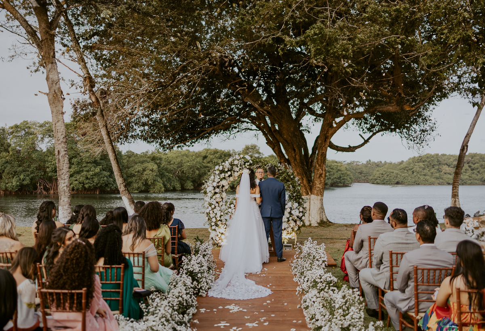
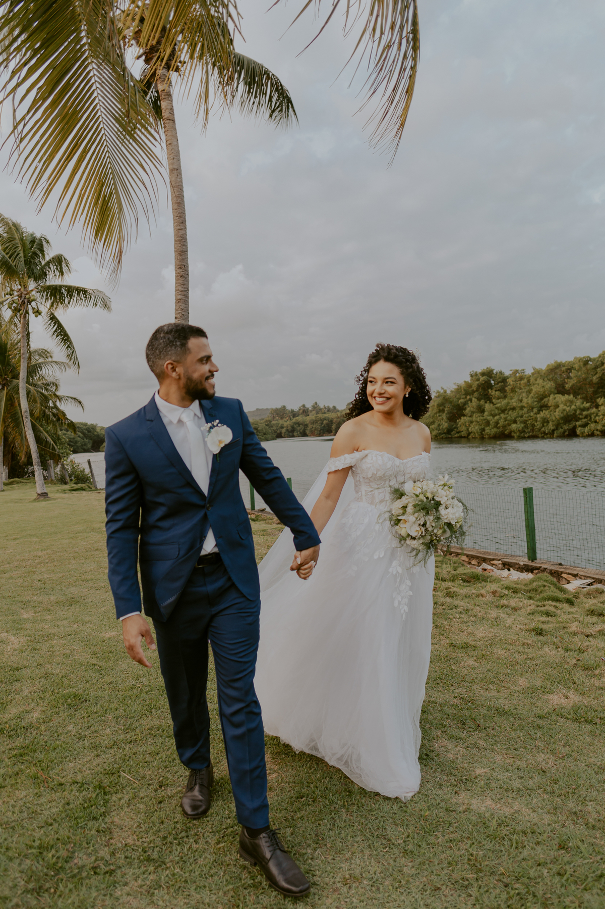
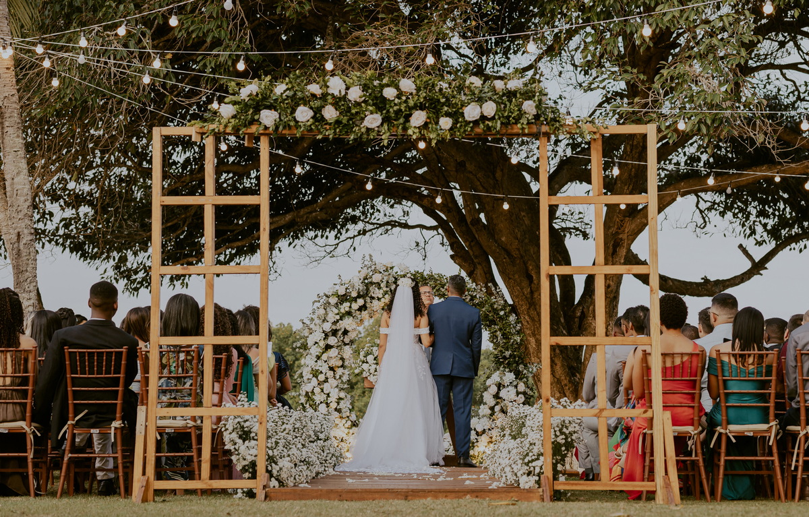
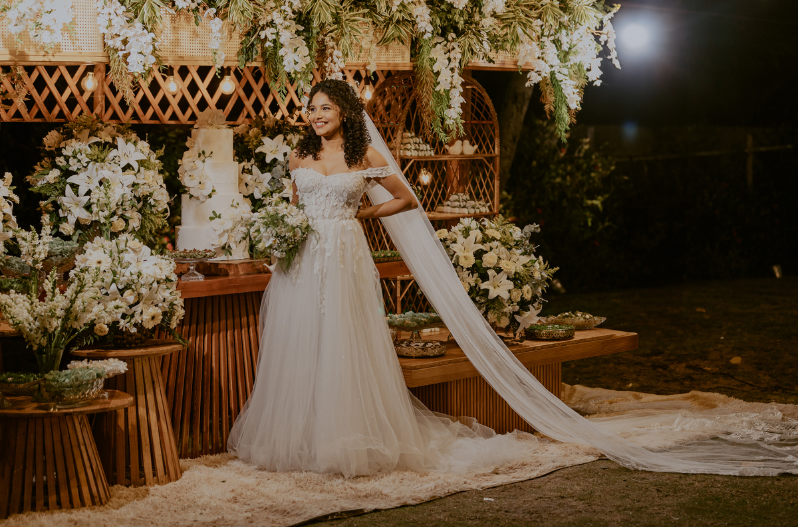
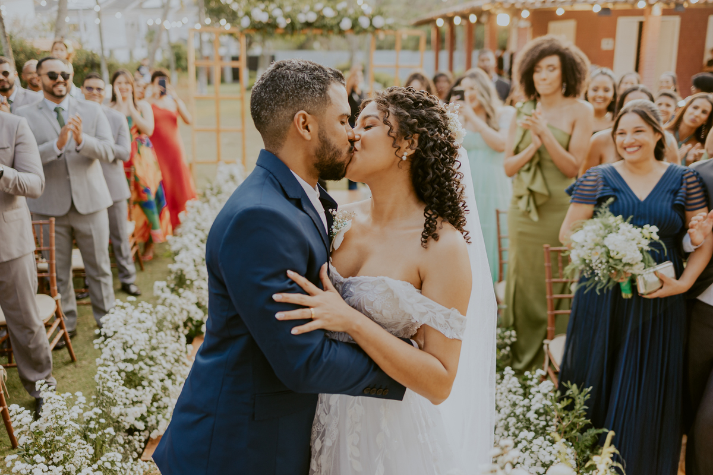
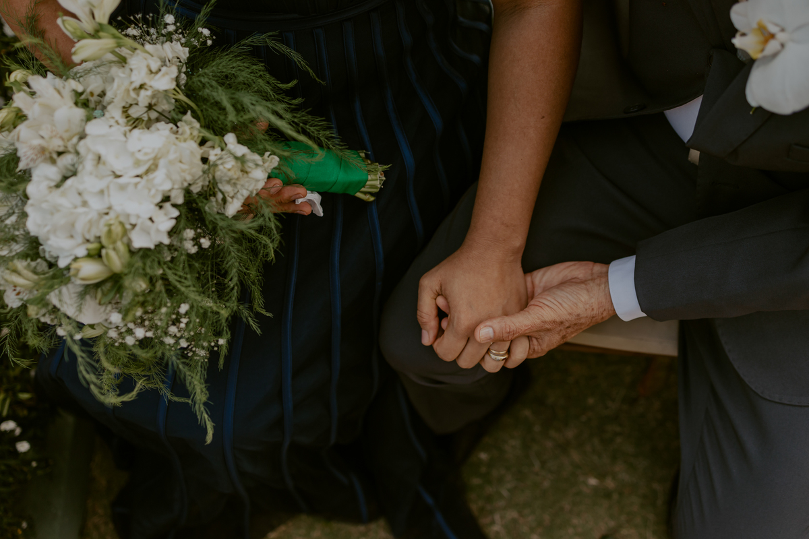
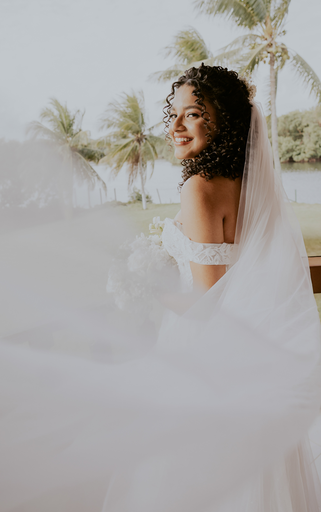
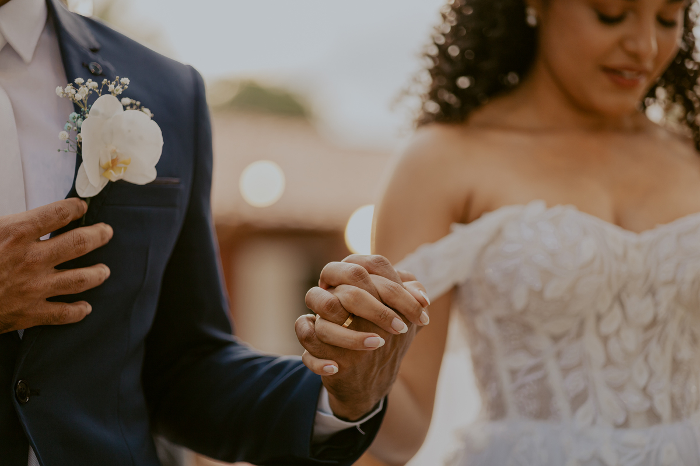

Casa Rio
O seu sim,
à beira do rio.
Um lugar para celebrar a sua história.
Buraquinho, Lauro de Freitas · Bahia
Natureza. Encontros. Memórias.
À beira de um
novo capítulo.
O Rio Joanes ao fundo. O verde por perto.
E as pessoas que fazem tudo valer a pena.

Há lugares que a gente visita.
Outros, a gente guarda.
A Casa Rio é um espaço de eventos às margens do Rio Joanes, em Buraquinho. Aqui, a natureza encontra a celebração em ambientes para reunir, emocionar e receber.
São 10.000 m² dentro do Condomínio Foz do Joanes, em Lauro de Freitas. Um convite para sair do ritmo da cidade e viver o seu momento.
Venha sentir esse lugarde espaço
convidados de capacidade total
O tempo muda.
A emoção fica.
Do primeiro encontro ao último abraço,
um cenário para viver por inteiro.


Um sim sob as árvores.
O verde, a luz e o rio como testemunhas.
O seu dia.
Do seu jeito.
O começo de vocês.
Uma cerimônia à beira do rio, os abraços de quem esteve junto e uma festa para chamar de sua. Venha imaginar o seu casamento na Casa Rio.



Para viver.
Para receber.
Uma estrutura que acompanha os diferentes momentos da sua celebração.
O espaço +
10.000 m² às margens do Rio Joanes, dentro do Condomínio Foz do Joanes. Capacidade total para até 600 convidados, garagem para 60 carros e espaço para discoteca.
Camarins +
Camarim da noiva climatizado, com banheiro reservado e vista para o rio. Camarim do noivo com banheiro reservado.
Mobiliário +
150 cadeiras, 15 mesas, 15 pranchões, duas mesas rústicas, uma mesa de centro e um aparador. Consulte a equipe para alinhar a composição do seu evento.
Cozinhas de apoio +
Áreas para bebidas e preparo de alimentos, com fogão semi-industrial, freezer e caixa térmica. Os detalhes da estrutura são alinhados na visita e na proposta.
Instantes que
ficam com a gente.
Endy e Marlom, na Casa Rio.
Um dia visto por Garcêz Fotografia.

O cenário é nosso.
A história é sua.
Vamos escrever esse dia Seu próximo
grande encontro.
Conte o que você está imaginando. A equipe recebe seu pedido pelo WhatsApp para consultar a disponibilidade e combinar uma visita.
Rua João Marques de Oliveira, 53Buraquinho · Lauro de Freitas, BA
Condomínio Foz do JoanesComo chegar (71) 98200-9940